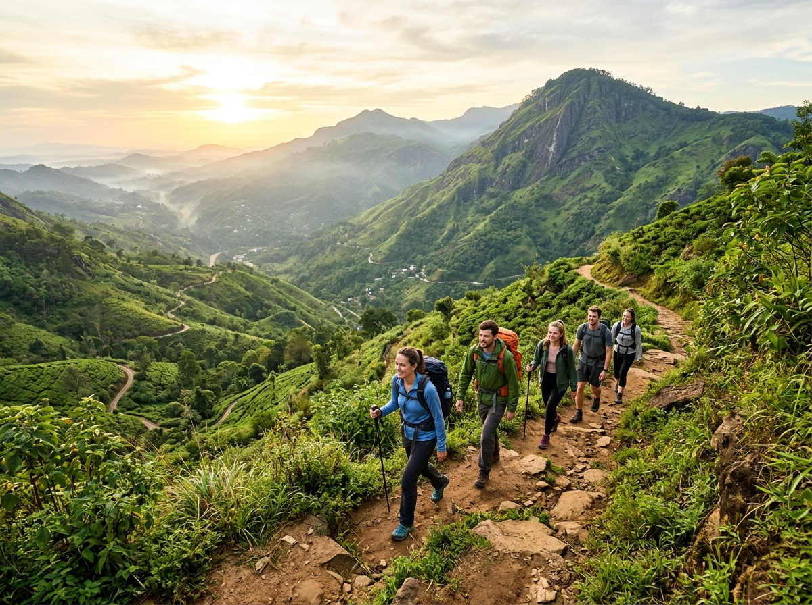
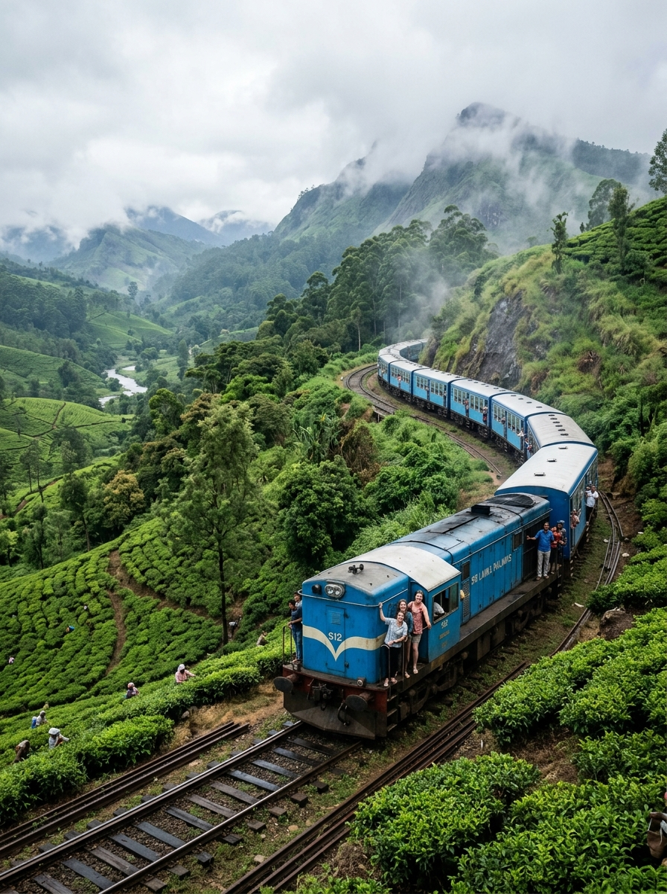
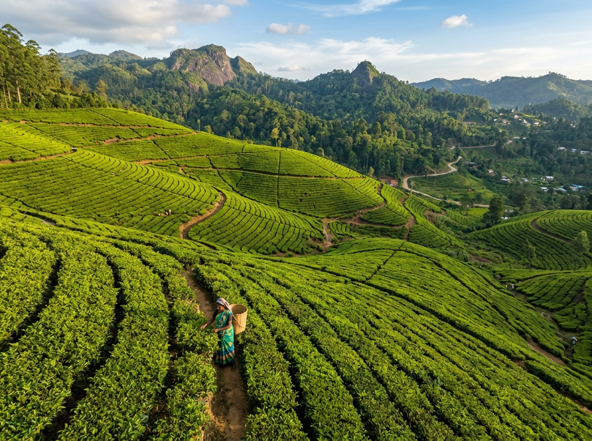
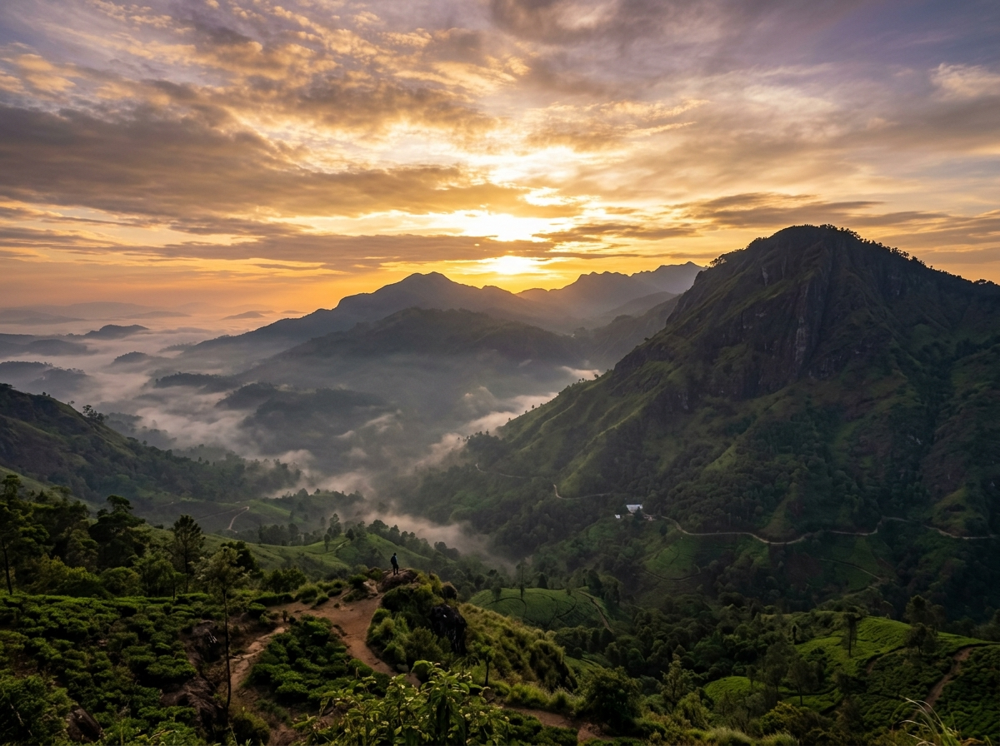
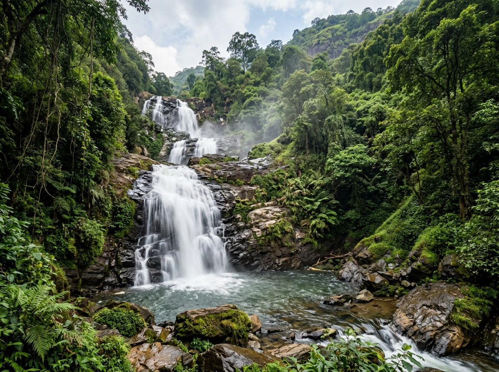
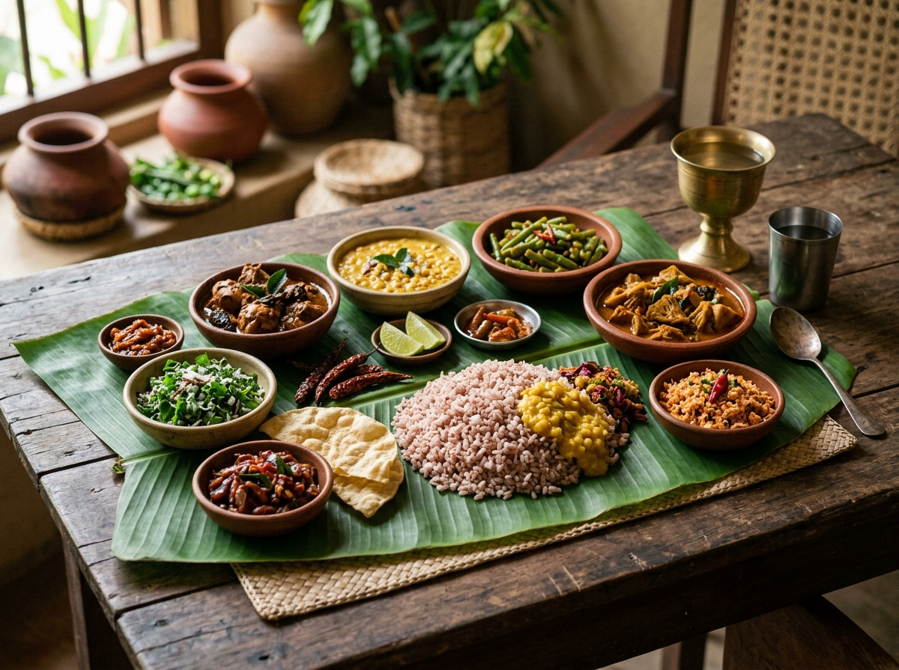
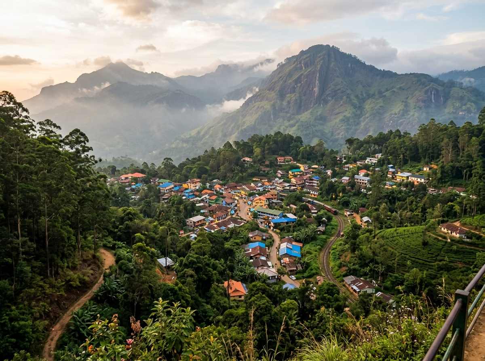
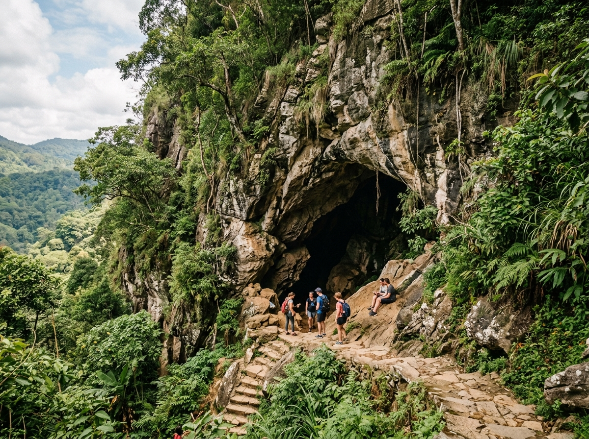

Choose Your Experience
Ella offers a range of activities for every type of traveller. Here's what you can look forward to.







Top Things to See
Whether you're looking for outdoor adventure, cultural immersion, or simply a beautiful place to relax, Ella delivers. Here are the top experiences visitors enjoy:
Popular viewpoints and natural sites
- Mountain viewpoints (Little Adam's Peak, Ella Rock summit)
- Tea estates and factory visits
- Waterfalls (Ravana Falls, Diyaluma Falls nearby)
- Nine Arches Bridge at train-crossing time
- Ravana Cave exploration

Plan Your Ella Experience
Planning a visit to Ella is straightforward. Follow these steps to make the most of your time:
- Choose your travel dates — consider the drier months (January–March) for the best hiking conditions
- Select your experiences — hiking, train rides, tea tours, or a mix of everything
- Book your train tickets early, especially for reserved seats on the Kandy–Ella route
- Arrange accommodation in Ella town — options range from guesthouses to boutique hotels
- Send an inquiry through our contact page for personalised recommendations

Nature Exploration
Ella's compact geography means that forests, streams, and wildlife are never far away. The area supports a variety of bird species, butterflies, and other wildlife in its mix of cultivated tea land and natural forest patches.
Walking between attractions often takes you along quiet rural paths through villages and plantations — an experience that is itself one of Ella's great pleasures.
Ready to Choose Your Adventure?
Tell us what interests you and we'll help you create the perfect Ella itinerary.
Send an Inquiry